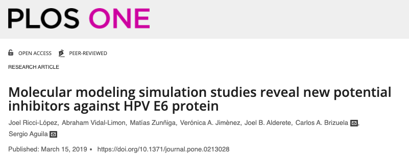
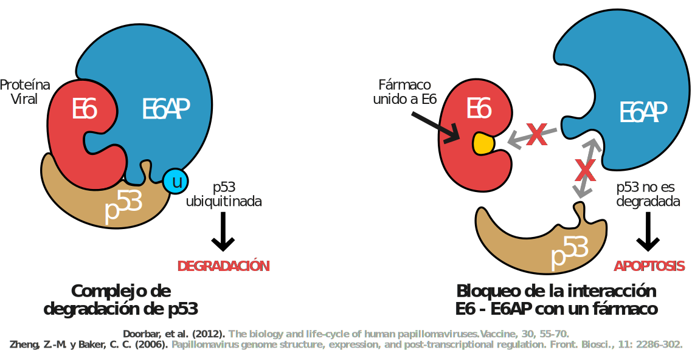

Este sitio contiene la metodología y los scripts utilizados en el proyecto de investigación. El menú de la izquierda permite accesar a cada sección de la metodología por objetivo.
Ricci-Lopez, et al. (2019). Molecular modeling simulation studies reveal new potential inhibitors against HPV E6 protein. PLoS ONE 14(3) e0213028.
Decarga la tesis en formato .pdf: Enlace de descarga
La infección por el virus del papiloma humano (VPH) es una de las enfermedades de transmisión sexual más comunes, y algunos VPH han sido identificados como el agente etiológico de diversos tipos de cáncer. Actualmente existen vacunas capaces de prevenir la infección por estos virus. Sin embargo, para el caso de personas ya infectadas, aún sigue siendo necesario el desarrollo de un tratamiento farmacológico eficaz y seguro para combatir la infección y tratar los efectos oncogénicos que éstos ocasionan. Uno de los blancos terapéuticos más estudiados del VPH ha sido la oncoproteína E6, identificada como uno de los factores clave en la inmortalización celular y la progresión tumoral en células VPH-positivas. E6 es capaz de promover la degradación de la proteína de supresión tumoral p53, a través de la interacción con la proteína celular ubiquitina ligasa E6AP. Por lo anterior, impedir el acoplamiento E6-E6AP es una de las principales estrategias para inhibir la viabilidad y proliferación de las células infectadas.
En el presente trabajo se propuso una metodología in silico enfocada en el descubrimiento de moléculas capaces de bloquear esta interacción. Para ello, se partió de la estructura cristalográfica de la proteína E6 VPH-16 acoplada al motivo LxxLL de E6AP, y de un conjunto inicial de 34,804 moléculas obtenido de la base de datos ZINC15 a partir de su similitud estructural con 26 compuestos cuya actividad anti-VPH ha sido evaluada previamente. Después, se realizó un proceso conocido como Cribado Virtual mediante la predicción de la propiedades ADMETox de las moléculas y la Simulación de Acoplamiento Molecular con la proteína E6. Con ello fue posible filtrar compuestos candidato con características farmacocinéticas favorables y con capacidad de interaccionar con E6. Por último, cuatro de estos compuestos fueron seleccionados y, mediante Simulación de Dinámica Molecular, se corroboró la estabilidad de su acoplamiento con E6, y su efecto en la reducción de la afinidad de E6 hacia E6AP. Por lo anterior, la metodología empleada y las moléculas identificadas en este trabajo representan un nuevo punto de partida en el desarrollo de fármacos anti-VPH.
El sitio de unión a E6AP de la proteína viral E6 de los VPH de alto riesgo es un blanco farmacológico cuya evaluación in silico, mediante Cribado Virtual y Dinámica Molecular, permitirá identificar moléculas con propiedades farmacológicas capaces de inhibir la interacción E6-E6AP.
Caracterizar y evaluar in silico el sitio de unión a E6AP de la proteína E6 del Virus del Papiloma Humano de alto riesgo para identificar y proponer moléculas con potencial farmacológico en el tratamiento anti-VPH.